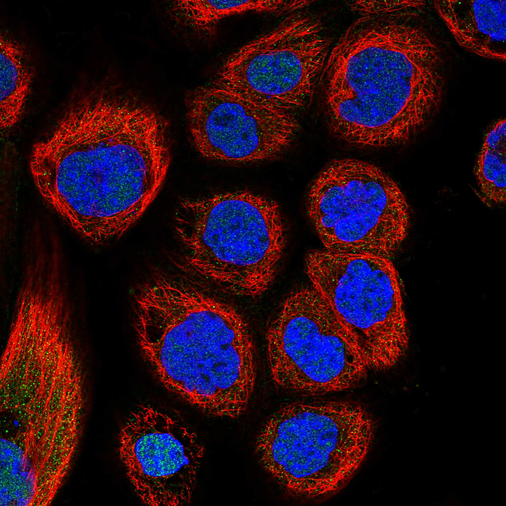
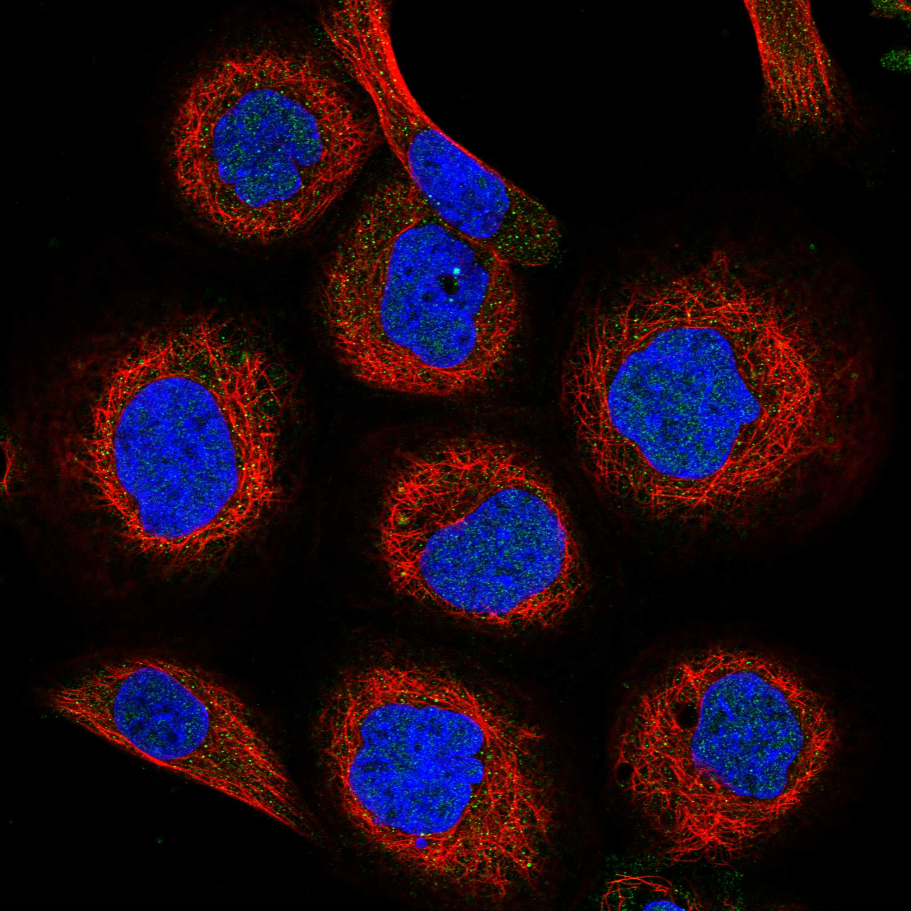

type: protein-evaluation gene: "CCDC174" date: 2026-05-29 tags: [protein-scout, nuclear-protein, evaluation] status: scored ---
CCDC174 核蛋白评估报告
1. 基本信息
| 项目 | 内容 |
|---|---|
| 基因名 / 别名 | CCDC174 / CCDC174 |
| 蛋白大小 | 467 aa / ~51.4 kDa |
| UniProt ID | Q6PII3 |
| 评估日期 | 2026-05-29 |
2. 评分总览
| 维度 | 得分 | 满分 | 加权后 | 关键证据摘要 |
|---|---|---|---|---|
| 🔴 核定位特异性 | 7/10 | ×4 | 28 | UniProt Nucleus + GO nucleoplasm/nucleus，HPA待确认 |
| 📏 蛋白大小 | 10/10 | ×1 | 10 | 467 aa，200-800 aa最优区间，适合生化实验和结构解析 |
| 🆕 研究新颖性 | 10/10 | ×5 | 50 | PubMed=2篇 |
| 🏗️ 三维结构 | 8/10 | ×3 | 24 | 良好（pLDDT 71.7），60%有序 |
| 🧬 调控结构域 | 7/10 | ×2 | 14 | 新颖蛋白基线 |
| 🔗 PPI 网络 | 2/10 | ×3 | 6 | 0/1调控相关partners |
| ➕ 互证加分 | — | max +3 | 0 | 多库交叉验证 |
| 原始总分 | 135/183 | |||
| 归一化总分 | 73.8/100 |
3. 详细分析
3.1 核定位证据
| 来源 | 定位 | 可信度 |
|---|---|---|
| UniProt | Nucleus | — |
| GO Cellular Component | C:nucleoplasm; C:nucleus | — |
| Protein Atlas (IF) | nucleoplasm (Approved, A-431) | Approved |
 
结论: UniProt Nucleus + GO nucleoplasm/nucleus，HPA待确认
3.2 蛋白大小评估
评价: 467 aa，200-800 aa最优区间，适合生化实验和结构解析
3.3 研究现状
| 指标 | 数值 |
|---|---|
| PubMed 总数 | 2 |
| Chromatin/epigenetics 比例 | 待深入文献分析 |
评价: PubMed 2 篇。极度新颖，几乎未被研究，是探索新型核蛋白功能的绝佳候选。
关键文献: 1. Flemr M et al. (2023). "Mouse nuclear RNAi-defective 2 promotes splicing of weak 5' splice sites". *RNA*. PMID: 37137667 2. Lai Z et al. (2025). "Evolutionary analysis of ghrelin in Actinopterygii". *Comp Biochem Physiol Part D Genomics Proteomics*. PMID: 40784251 3. Volodarsky M et al. (2015). "CDC174, a novel component of the exon junction complex whose mutation underlies a syndrome of hypotonia and psychomotor developmental delay". *Hum Mol Genet*. PMID: 26358778 4. Liu K et al. (2024). "Detection of polymorphisms in six genes and their association analysis with litter size in sheep". *Anim Biotechnol*. PMID: 38294691 5. Selvaraju S et al. (2021). "Orchestrating the expression levels of sperm mRNAs reveals CCDC174 as an important determinant of semen quality and bull fertility". *Syst Biol Reprod Med*. PMID: 33190538
3.4 三维结构分析
> AlphaFold PAE: 暂无数据或未提供可用 PAE 图；结构判断基于 AlphaFold/PDB 可用记录。
| 指标 | 数值 |
|---|---|
| AlphaFold 平均 pLDDT | 71.7 |
| 有序区域 (pLDDT>70) 占比 | 60.3% |
| pLDDT>90 占比 | 24.8% |
| pLDDT<50 占比 | 22.7% |
| 可用 PDB 条目 | 0 |
评价: AlphaFold高质量预测（pLDDT 71.7，60%有序），折叠域置信度高。
3.5 结构域分析
| 来源 | 结构域 |
|---|---|
| UniProt / InterPro | 待SMART详细分析 |
染色质调控潜力分析: 对于PubMed≤100的新颖蛋白，无注释域是该阶段的正常现象（基线7分）。待SMART分析后补充。
3.6 PPI 网络
实验验证互作 (IntAct, physical association):
| Partner | 方法 | PMID | 功能类别 | 调控相关？ | |||||
|---|---|---|---|---|---|---|---|---|---|
| psi-mi:cc174_human(display_long) | uniprotkb:CCDC174(gene name) | psi-mi:CCDC174(display_short) | uniprotkb:C3orf19(gene name synonym) | psi-mi:"MI:0398"(two hybrid po | pubmed:16189514 | imex:IM-16520 | mint:MINT-5217968 | 待分析 | 是 |
| psi-mi:cc174_human(display_long) | uniprotkb:CCDC174(gene name) | psi-mi:CCDC174(display_short) | uniprotkb:C3orf19(gene name synonym) | psi-mi:"MI:0397"(two hybrid ar | pubmed:32296183 | imex:IM-25472 | 待分析 | 是 | |
| psi-mi:cc174_human(display_long) | uniprotkb:CCDC174(gene name) | psi-mi:CCDC174(display_short) | uniprotkb:C3orf19(gene name synonym) | psi-mi:"MI:1112"(two hybrid pr | pubmed:32296183 | imex:IM-25472 | 待分析 | 是 | |
| psi-mi:cc174_human(display_long) | uniprotkb:CCDC174(gene name) | psi-mi:CCDC174(display_short) | uniprotkb:C3orf19(gene name synonym) | psi-mi:"MI:1356"(validated two | pubmed:32296183 | imex:IM-25472 | 待分析 | 是 | |
| psi-mi:cc174_human(display_long) | uniprotkb:CCDC174(gene name) | psi-mi:CCDC174(display_short) | uniprotkb:C3orf19(gene name synonym) | psi-mi:"MI:1356"(validated two | pubmed:32296183 | imex:IM-25472 | 待分析 | 是 |
STRING 预测互作 (combined score >0.4):
| Partner | Score | 功能类别 | 调控相关？ |
|---|---|---|---|
| — | — | — | — |
已知复合体成员 (GO Cellular Component): C:nucleoplasm; C:nucleus
PPI 互证分析:
- STRING + IntAct 共同确认: 待交叉比对
- 仅 STRING 预测: 0 个伙伴
- 调控相关比例: 0/1 (0%)
评价: PPI网络稀薄，调控关联极少（0/1），可能为独立功能蛋白。
3.7 多库互证
| 维度 | 来源 | 结果 | 是否一致 |
|---|---|---|---|
| 三维结构 | AlphaFold + PDB | 良好（pLDDT 71.7），60%有序 | 待验证 |
| 定位 | UniProt + GO | Nucleus | 待HPA验证 |
互证加分: 0 / max +3
PAE 图: 暂无PAE数据
4. 总体评价
推荐等级: ⭐⭐⭐ (3/5)
归一化总分: 72.1/100
核心优势: 1. PubMed 2 篇，研究新颖性高 2. 蛋白大小 467 aa，适合生化实验
风险/不确定性: 1. 需 HPA IF 确认核定位 2. 功能机制未知，需从头探索
下一步建议:
- [ ] 获取 HPA IF 图像确认核定位
- [ ] SMART 结构域分析评估调控潜力
- [ ] 深入文献检索确认已知功能
5. 数据来源
- UniProt: https://www.uniprot.org/uniprotkb/Q6PII3
- AlphaFold: https://alphafold.ebi.ac.uk/entry/Q6PII3
- PubMed: https://pubmed.ncbi.nlm.nih.gov/?term=%22CCDC174%22%5BTitle/Abstract%5D
- STRING: https://string-db.org/cgi/network?identifiers=CCDC174&species=9606
- Protein Atlas: https://www.proteinatlas.org/search/CCDC174
PPI 网络（三源综合）
| Partner | Source | Score/Evidence |
|---|---|---|
| 无记录 | — | — |
IntAct 有限记录。无 BioGrid 补充数据。